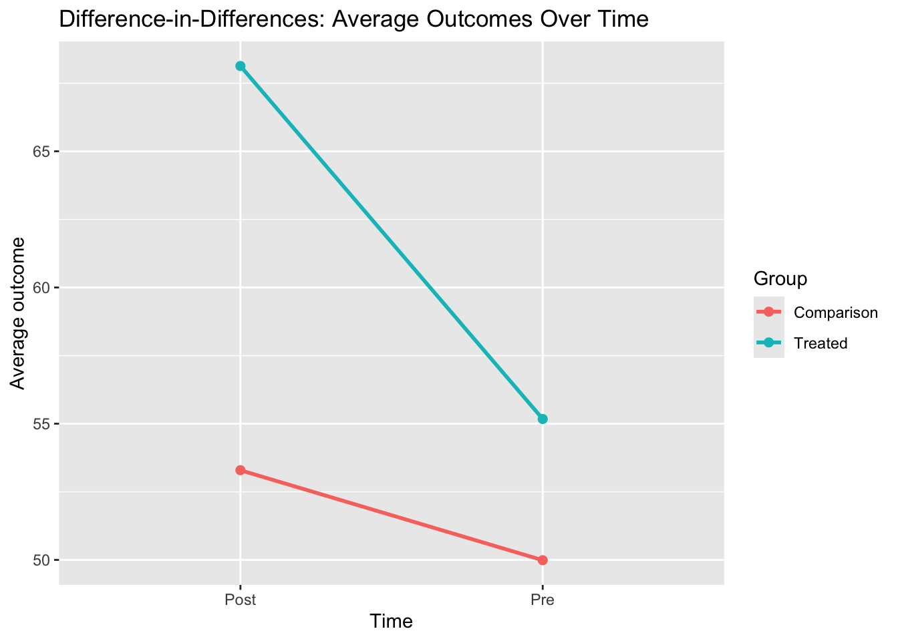

In the simple regression above, \(\hat{\beta}_3\) is equal to this DiD estimate.
2.2. The key assumption: parallel trends
The heart of DiD is the parallel trends assumption:
In the absence of treatment, the treated and comparison groups would have experienced the same change over time in the outcome.
In other words:
The comparison group tells us what would have happened to the treated group if they had not received the policy.
We do not require that the levels are the same pre-treatment, but we do require that the trend is comparable.
If this assumption fails (for example, the treated group was already on a different trajectory for reasons unrelated to the policy), DiD can be biased.
This is why pre-treatment data (multiple periods before the policy) are very helpful for:
Checking whether trends looked similar pre-policy,
Strengthening the case for parallel trends.
3. Example in R: synthetic DiD data
We will simulate a simple DiD scenario with:
Two groups: treated and comparison,
Two time periods: pre and post,
A true policy effect applied only to the treated group in the post period,
A common time trend affecting both groups.
Think of the outcome as something like:
Monthly hospital admissions per hospital,
Average cost per patient,
A quality-of-care index.
Code
set.seed(123)# Number of units per groupn_treated <-500n_control <-500# Two time periods: 0 = pre, 1 = posttime_periods <-c(0, 1)# Expand into a panel-like datasetdid_data <-expand.grid(id =1:(n_treated + n_control),time = time_periods)# Indicator for treated groupdid_data$treat <-ifelse(did_data$id <= n_treated, 1, 0)# Post indicatordid_data$post <- did_data$time# True underlying parametersbaseline_mean <-50# baseline outcome for control group, prebaseline_diff <-5# treated group is 5 units higher at baselinetime_trend <-3# common increase over time in both groupstrue_treat_effect <-10# additional increase for treated group in postsigma_noise <-5# random noise standard deviation# Generate outcomedid_data$Y <-with(did_data, baseline_mean + baseline_diff * treat + time_trend * post + true_treat_effect * (treat * post) +rnorm(n =nrow(did_data), mean =0, sd = sigma_noise))head(did_data)
did_fit <-lm(Y ~ treat * post, data = did_data)summary(did_fit)
Call:
lm(formula = Y ~ treat * post, data = did_data)
Residuals:
Min 1Q Median 3Q Max
-15.5330 -3.3392 -0.0044 3.3809 16.8209
Coefficients:
Estimate Std. Error t value Pr(>|t|)
(Intercept) 49.9883 0.2238 223.31 <2e-16 ***
treat 5.1846 0.3166 16.38 <2e-16 ***
post 3.3053 0.3166 10.44 <2e-16 ***
treat:post 9.6527 0.4477 21.56 <2e-16 ***
---
Signif. codes: 0 '***' 0.001 '**' 0.01 '*' 0.05 '.' 0.1 ' ' 1
Residual standard error: 5.005 on 1996 degrees of freedom
Multiple R-squared: 0.6547, Adjusted R-squared: 0.6542
F-statistic: 1262 on 3 and 1996 DF, p-value: < 2.2e-16
In the regression output:
(Intercept) is the mean in the control group, pre.
treat is the baseline difference (treated vs control) pre.
post is the time trend for the control group.
treat:post is the DiD estimate (treatment effect).
Compare the estimate of treat:post with did_manual and the true effect (10).
3.3. Visualizing DiD
A simple plot of group means over time is very helpful for intuition and checking rough parallel trends.
Code
library(ggplot2)plot_data <-aggregate( Y ~ treat + post,data = did_data,FUN = mean)plot_data$group <-ifelse(plot_data$treat ==1, "Treated", "Comparison")plot_data$time_label <-ifelse(plot_data$post ==0, "Pre", "Post")ggplot(plot_data, aes(x = time_label, y = Y, group = group, color = group)) +geom_line(size =1) +geom_point(size =2) +labs(x ="Time",y ="Average outcome",color ="Group",title ="Difference-in-Differences: Average Outcomes Over Time" )

Average outcomes over time in treated and control groups.
If the pre-period trends were parallel (here we only have one pre point, but imagine more), and the treated group jumps more than the comparison group in the post period, the DiD idea is visually clear.
4. Strengths and limitations of DiD
4.1. Four key strengths
Controls for time-invariant unobserved differences
Any fixed difference between groups (e.g., underlying risk, baseline infrastructure, stable culture) is differenced out, as long as it does not change over time differently by group.
Simple and intuitive
The basic DiD estimator has a clear table-based interpretation and a simple regression form. It is easy to explain to clinicians, policymakers, and other stakeholders.
Uses natural experiments and policies
DiD works well when assignment is driven by policies or external rules (not individual choice), such as changes in reimbursement, eligibility thresholds, or rollouts across regions.
Flexible extension
The basic idea can be extended to:
Multiple time periods,
Unit fixed effects and time fixed effects,
Covariates,
Staggered treatment timing (with modern estimators).
4.2. Four key limitations
Parallel trends assumption is untestable and critical
DiD relies on the idea that, without treatment, treated and comparison groups would have changed in parallel. We can inspect pre-trends, but we can never fully prove this assumption.
Time-varying confounders can bias estimates
If something else (besides the treatment) changes over time differently across groups and affects the outcome, DiD will generally attribute that difference to the treatment.
Composition changes and migration issues
If the composition of the treated or comparison group changes over time (e.g., different types of patients, hospitals entering or exiting), DiD can be misleading unless these changes are properly addressed.
Complications with staggered adoption and dynamic effects
In settings where units adopt treatment at different times, the two-way fixed effects DiD estimator can mix different comparisons in problematic ways. Modern methods (e.g., cohort-specific estimators, event-study approaches) are needed, and the simple DiD intuition needs refinement.
5. Why DiD matters in HEOR and health policy
Difference-in-differences is one of the workhorse designs for evaluating health policies and interventions in the real world.
Some reasons why it is especially important in HEOR and health policy:
5.1. Evaluating policy changes and reforms
Many questions in HEOR ask:
What was the effect of a new reimbursement policy?
Did a new screening guideline change outcomes?
How did a pay-for-performance scheme impact quality or costs?
These changes are often rolled out:
At specific times,
To certain regions, hospitals, or patient groups, but not others.
DiD uses these differences to construct a quasi-experimental comparison and estimate causal effects.
5.2. Leveraging routinely collected data
HEOR frequently uses:
Claims data,
Electronic health records,
Registries,
Surveys and administrative datasets.
These data often have:
Clear time stamps,
Information on which individuals or regions were affected by a policy.
DiD gives a natural way to exploit this rich longitudinal structure without needing randomization.
5.3. Informing economic evaluations and decision models
Policy-relevant models often need:
Estimates of effectiveness (e.g., change in utilization, health outcomes),
Sometimes by subgroup, region, or implementation context.
DiD studies can provide policy-relevant causal estimates that feed into:
Cost-effectiveness analyses,
Budget impact models,
Health technology assessments.
5.4. Communicating results to policymakers
DiD’s structure maps nicely onto the way policy people think:
“What changed after the policy where it was implemented?”
“What changed in similar places without the policy?”
“What is the difference between those changes?”
This makes it easier to turn technical results into narratives and graphs that are comprehensible and persuasive in policy discussions.
6. Further reading
If you want to strengthen your DiD skills (especially for applied work), here are four very useful references:
Angrist & Pischke – Mostly Harmless Econometrics
The DiD chapter is a modern classic: clear, intuitive, and focused on practical issues.
Wing, Simon, and Bello-Gomez (2018). Designing Difference in Difference Studies for Public Health Policy Evaluation.
A very accessible paper focusing on DiD in public health, including graphical diagnostics and design issues.
Goodman-Bacon (2021). Difference-in-Differences with Variation in Treatment Timing.
Explains the issues with two-way fixed-effects DiD when treatment timing is staggered and introduces a helpful decomposition.
Roth et al. (2023). What’s Trending in Difference-in-Differences? A Synthesis of the Recent Econometrics Literature.
A more advanced overview of recent methodological developments in DiD, useful for staying current in applied research.
With DiD in your toolkit, you are better equipped to tackle the classic HEOR question:
“Given that we cannot randomize this policy, how can we still say something credible about what it did?”
Source Code
---title: "Difference-in-Differences (DiD) in R: Before, After, and a Comparison Group"---# 1. Introduction: when "before and after" is not enoughSuppose a new health policy is rolled out:- A new screening guideline,- A change in copayments,- A hospital payment reform.You look at the outcome **before** and **after** the policy and see that things improved. Victory! Policy works! …right?Not so fast.During the same period:- The economy might have changed,- Clinical practice might have improved everywhere,- A pandemic might have happened (hi, 2020).Comparing only **before vs after** in the treated group mixes up:- The effect of the policy, **and**- Everything else that changed over time.Difference-in-differences (DiD) says:> “Let’s bring in a **comparison group** that didn’t get the policy and see how *their* outcome changed over the same period.”Then we:1. Look at the change over time in the **treated** group.2. Look at the change over time in the **comparison** group.3. Subtract the two.That double difference (the “difference in differences”) is our estimate of thepolicy’s effect — under some important assumptions.In this tutorial we will:- Lay out the basic DiD setup and assumptions,- Show how to implement a simple DiD in R with synthetic data,- List some key **strengths** and **limitations**,- Explain why DiD matters a lot in **HEOR and health policy**,- Point to good resources if you want to dig deeper.---# 2. Foundations: the basic DiD setupWe start with the classic **two-by-two** setup:- Two time periods: **before** (pre) and **after** (post) a policy.- Two groups: - A **treated** group (exposed to the policy in the post period), - A **comparison** (or control) group (not exposed).Let:- $Y_{it}$ be the outcome for unit $i$ at time $t$,- $D_i$ be 1 if unit $i$ is in the treated group, 0 if in the comparison group,- $\text{Post}_t$ be 1 if we are in the post period, 0 in the pre period.The simple DiD regression model is:$$Y_{it} = \beta_0 + \beta_1 D_i + \beta_2 \text{Post}_t+ \beta_3 (D_i \times \text{Post}_t) + \varepsilon_{it}.$$Interpretation:- $\beta_0$ is the **average outcome** in the comparison group, pre period.- $\beta_1$ is the **baseline difference** between treated and comparison, pre period.- $\beta_2$ is the **common time trend** affecting both groups.- $\beta_3$ is the **DiD estimator**: the treatment effect (under assumptions).In words:> DiD effect = (Change over time in treated group) - (Change over time in comparison group).---## 2.1. The DiD "table" viewYou can also think of DiD as working with four group means:- Treated, pre: $\bar{Y}^{\text{T, pre}}$- Treated, post: $\bar{Y}^{\text{T, post}}$- Comparison, pre: $\bar{Y}^{\text{C, pre}}$- Comparison, post: $\bar{Y}^{\text{C, post}}$Then:- Change in treated group: $\bar{Y}^{\text{T, post}} - \bar{Y}^{\text{T, pre}}$- Change in comparison group: $\bar{Y}^{\text{C, post}} - \bar{Y}^{\text{C, pre}}$The DiD estimator is:$$\text{DiD} =\left( \bar{Y}^{\text{T, post}} - \bar{Y}^{\text{T, pre}} \right)- \left( \bar{Y}^{\text{C, post}} - \bar{Y}^{\text{C, pre}} \right).$$In the simple regression above, $\hat{\beta}_3$ is equal to this DiD estimate.---## 2.2. The key assumption: parallel trendsThe heart of DiD is the **parallel trends assumption**:> In the absence of treatment, the treated and comparison groups would have> experienced the **same change over time** in the outcome.In other words:- The comparison group tells us what would have happened to the **treated group** if they had **not** received the policy.- We do **not** require that the levels are the same pre-treatment, but we do require that the **trend** is comparable.If this assumption fails (for example, the treated group was already on a different trajectory for reasons unrelated to the policy), DiD can be biased.This is why pre-treatment data (multiple periods before the policy) are very helpful for:- Checking whether trends looked similar pre-policy,- Strengthening the case for parallel trends.---# 3. Example in R: synthetic DiD dataWe will simulate a simple DiD scenario with:- Two groups: treated and comparison,- Two time periods: pre and post,- A true policy effect applied only to the treated group in the post period,- A common time trend affecting both groups.Think of the outcome as something like:- Monthly hospital admissions per hospital,- Average cost per patient,- A quality-of-care index.```{r}#| label: did-setup#| message: false#| warning: falseset.seed(123)# Number of units per groupn_treated <-500n_control <-500# Two time periods: 0 = pre, 1 = posttime_periods <-c(0, 1)# Expand into a panel-like datasetdid_data <-expand.grid(id =1:(n_treated + n_control),time = time_periods)# Indicator for treated groupdid_data$treat <-ifelse(did_data$id <= n_treated, 1, 0)# Post indicatordid_data$post <- did_data$time# True underlying parametersbaseline_mean <-50# baseline outcome for control group, prebaseline_diff <-5# treated group is 5 units higher at baselinetime_trend <-3# common increase over time in both groupstrue_treat_effect <-10# additional increase for treated group in postsigma_noise <-5# random noise standard deviation# Generate outcomedid_data$Y <-with(did_data, baseline_mean + baseline_diff * treat + time_trend * post + true_treat_effect * (treat * post) +rnorm(n =nrow(did_data), mean =0, sd = sigma_noise))head(did_data)```We have:- A treatment group that starts higher at baseline,- Both groups experience a time trend (+3),- The treated group gets an extra +10 jump after the policy.Our DiD estimator should recover something close to 10.---## 3.1. Simple group means and the DiD tableLet us compute and inspect the means in each of the four cells.```{r}#| label: did-group-meansmean_table <-aggregate( Y ~ treat + post,data = did_data,FUN = mean)mean_table```This gives us:- $\bar{Y}^{\text{T, pre}}$ (treat = 1, post = 0),- $\bar{Y}^{\text{T, post}}$ (treat = 1, post = 1),- $\bar{Y}^{\text{C, pre}}$ (treat = 0, post = 0),- $\bar{Y}^{\text{C, post}}$ (treat = 0, post = 1).We can compute the DiD estimate directly:```{r}#| label: did-manual-estimatemean_T_pre <-mean(did_data$Y[did_data$treat ==1& did_data$post ==0])mean_T_post <-mean(did_data$Y[did_data$treat ==1& did_data$post ==1])mean_C_pre <-mean(did_data$Y[did_data$treat ==0& did_data$post ==0])mean_C_post <-mean(did_data$Y[did_data$treat ==0& did_data$post ==1])did_manual <- (mean_T_post - mean_T_pre) - (mean_C_post - mean_C_pre)did_manual```This value should be close to the true treatment effect of 10.---## 3.2. Regression implementation of DiDNow let us fit the standard DiD regression:$$Y_{it} = \beta_0 + \beta_1 \text{treat}_i + \beta_2 \text{post}_t+ \beta_3 (\text{treat}_i \times \text{post}_t) + \varepsilon_{it}.$$```{r}#| label: did-regression#| message: false#| warning: falsedid_fit <-lm(Y ~ treat * post, data = did_data)summary(did_fit)```In the regression output:- `(Intercept)` is the mean in the control group, pre.- `treat` is the baseline difference (treated vs control) pre.- `post` is the time trend for the control group.- `treat:post` is the DiD estimate (treatment effect).Compare the estimate of `treat:post` with `did_manual` and the true effect (10).---## 3.3. Visualizing DiDA simple plot of group means over time is very helpful for intuition and checking rough parallel trends.```{r}#| label: did-plot#| message: false#| warning: false#| fig.cap: "Average outcomes over time in treated and control groups."library(ggplot2)plot_data <-aggregate( Y ~ treat + post,data = did_data,FUN = mean)plot_data$group <-ifelse(plot_data$treat ==1, "Treated", "Comparison")plot_data$time_label <-ifelse(plot_data$post ==0, "Pre", "Post")ggplot(plot_data, aes(x = time_label, y = Y, group = group, color = group)) +geom_line(size =1) +geom_point(size =2) +labs(x ="Time",y ="Average outcome",color ="Group",title ="Difference-in-Differences: Average Outcomes Over Time" )```If the pre-period trends were parallel (here we only have one pre point, but imagine more), and the treated group jumps more than the comparison group in the post period, the DiD idea is visually clear.---# 4. Strengths and limitations of DiD## 4.1. Four key strengths1. **Controls for time-invariant unobserved differences** Any **fixed** difference between groups (e.g., underlying risk, baseline infrastructure, stable culture) is differenced out, as long as it does not change over time differently by group.2. **Simple and intuitive** The basic DiD estimator has a clear table-based interpretation and a simple regression form. It is easy to explain to clinicians, policymakers, and other stakeholders.3. **Uses natural experiments and policies** DiD works well when assignment is driven by **policies or external rules** (not individual choice), such as changes in reimbursement, eligibility thresholds, or rollouts across regions.4. **Flexible extension** The basic idea can be extended to: - Multiple time periods, - Unit fixed effects and time fixed effects, - Covariates, - Staggered treatment timing (with modern estimators).## 4.2. Four key limitations1. **Parallel trends assumption is untestable and critical** DiD relies on the idea that, without treatment, treated and comparison groups would have changed in parallel. We can **inspect** pre-trends, but we can never fully prove this assumption.2. **Time-varying confounders can bias estimates** If something else (besides the treatment) changes over time **differently across groups** and affects the outcome, DiD will generally attribute that difference to the treatment.3. **Composition changes and migration issues** If the composition of the treated or comparison group changes over time (e.g., different types of patients, hospitals entering or exiting), DiD can be misleading unless these changes are properly addressed.4. **Complications with staggered adoption and dynamic effects** In settings where units adopt treatment at different times, the **two-way fixed effects** DiD estimator can mix different comparisons in problematic ways. Modern methods (e.g., cohort-specific estimators, event-study approaches) are needed, and the simple DiD intuition needs refinement.---# 5. Why DiD matters in HEOR and health policyDifference-in-differences is one of the **workhorse designs** for evaluating health policies and interventions in the real world.Some reasons why it is especially important in HEOR and health policy:## 5.1. Evaluating policy changes and reformsMany questions in HEOR ask:- What was the effect of a new **reimbursement policy**?- Did a new **screening guideline** change outcomes?- How did a **pay-for-performance** scheme impact quality or costs?These changes are often rolled out:- At specific times,- To certain regions, hospitals, or patient groups, but not others.DiD uses these differences to construct a **quasi-experimental comparison** and estimate causal effects.## 5.2. Leveraging routinely collected dataHEOR frequently uses:- Claims data,- Electronic health records,- Registries,- Surveys and administrative datasets.These data often have:- Clear time stamps,- Information on which individuals or regions were affected by a policy.DiD gives a natural way to exploit this **rich longitudinal structure** without needing randomization.## 5.3. Informing economic evaluations and decision modelsPolicy-relevant models often need:- Estimates of **effectiveness** (e.g., change in utilization, health outcomes),- Sometimes by subgroup, region, or implementation context.DiD studies can provide **policy-relevant causal estimates** that feed into:- Cost-effectiveness analyses,- Budget impact models,- Health technology assessments.## 5.4. Communicating results to policymakersDiD’s structure maps nicely onto the way policy people think:- “What changed after the policy where it was implemented?”- “What changed in similar places without the policy?”- “What is the difference between those changes?”This makes it easier to turn technical results into **narratives** and **graphs**that are comprehensible and persuasive in policy discussions.---# 6. Further readingIf you want to strengthen your DiD skills (especially for applied work), here are four very useful references:1. **Angrist & Pischke – _Mostly Harmless Econometrics_** The DiD chapter is a modern classic: clear, intuitive, and focused on practical issues.2. **Wing, Simon, and Bello-Gomez (2018). _Designing Difference in Difference Studies for Public Health Policy Evaluation._** A very accessible paper focusing on DiD in public health, including graphical diagnostics and design issues.3. **Goodman-Bacon (2021). _Difference-in-Differences with Variation in Treatment Timing._** Explains the issues with two-way fixed-effects DiD when treatment timing is staggered and introduces a helpful decomposition.4. **Roth et al. (2023). _What's Trending in Difference-in-Differences? A Synthesis of the Recent Econometrics Literature._** A more advanced overview of recent methodological developments in DiD, useful for staying current in applied research.With DiD in your toolkit, you are better equipped to tackle the classic HEOR question:> “Given that we cannot randomize this policy, how can we still say something credible about what it did?”